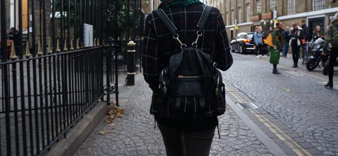
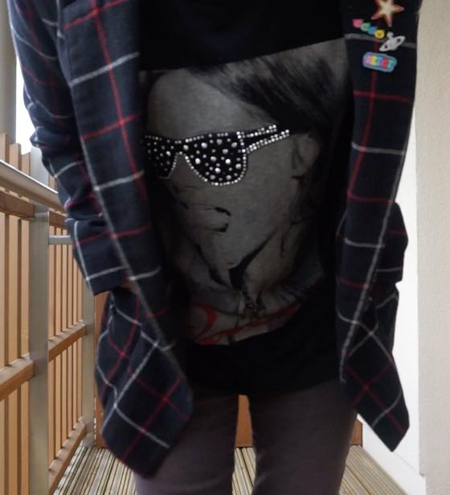
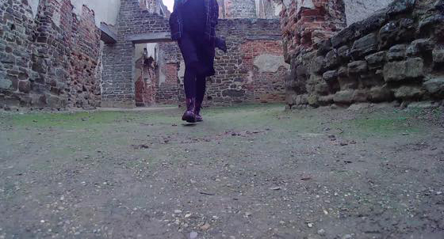
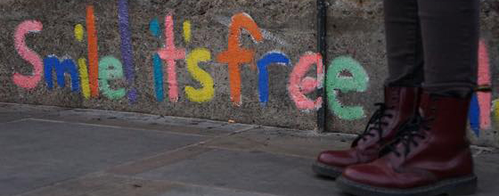

블로그 뒤져보니 무려 2011년도에 구입한 옷
이전에도 비슷한 스타일로 꾸준히 입고 댕겼는데
가을에는 이 자켓 만한게 없습니다;
얼반아웃피터스 사일런트+노이즈 제품 :)
스카프는 파리 놀러갔을때 넘 추버서(....) 급하게 산거 ㅋㅋ



사진찍은 날짜 장소 모두 다르지만 입고있는 옷은 정말 한결같음 ㅋㅋㅋㅋㅋㅋ

브릭레인에서 발견
Smile! It's free + 내 닥터마틴 :) 헷헷
+ 요 자켓입고 찍은 짧은 Vignette 이 있습니다
링크는 요기: https://youtu.be/n8CjBcdhIlg
체크무늬 자켓 사랑~워후~